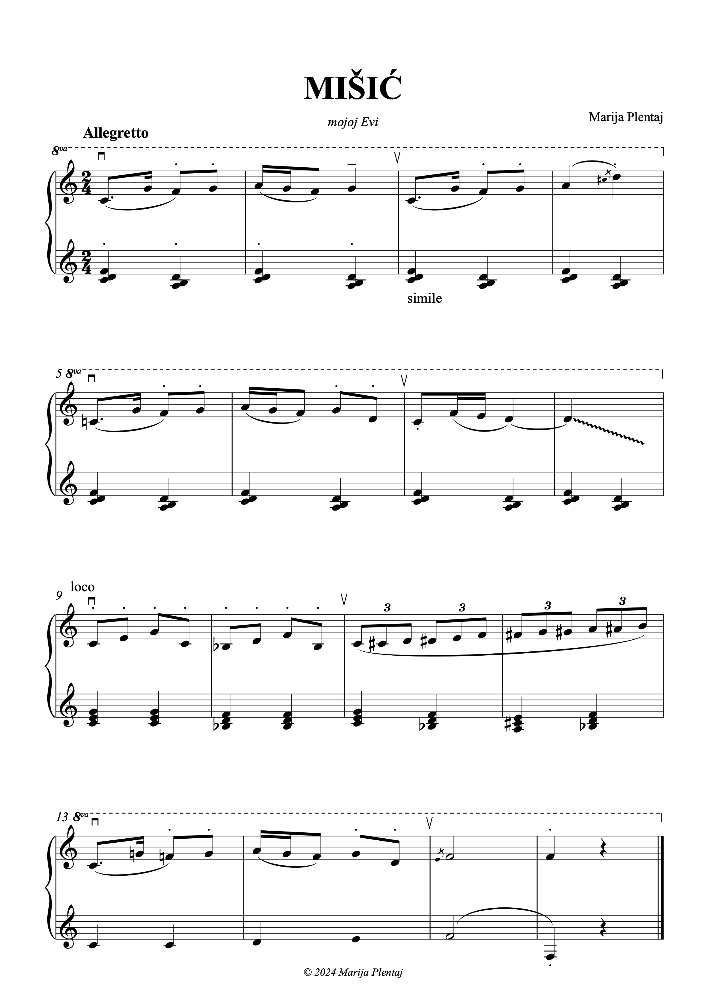
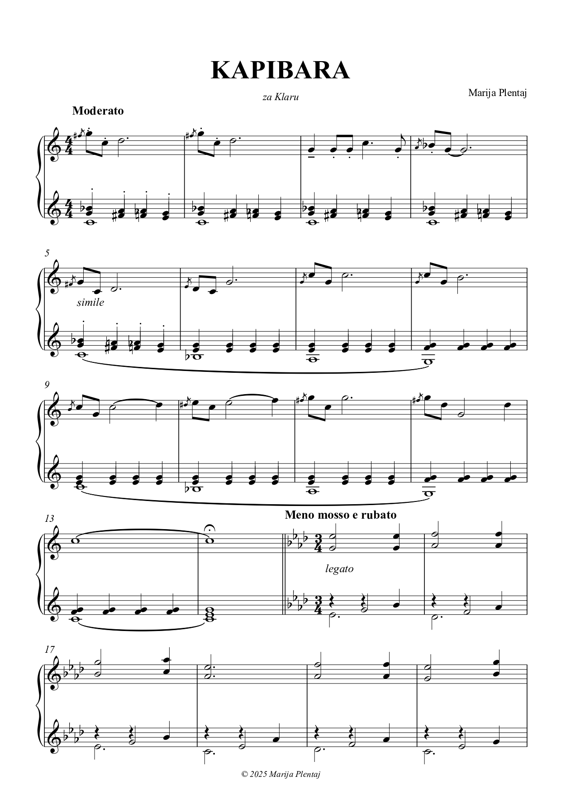
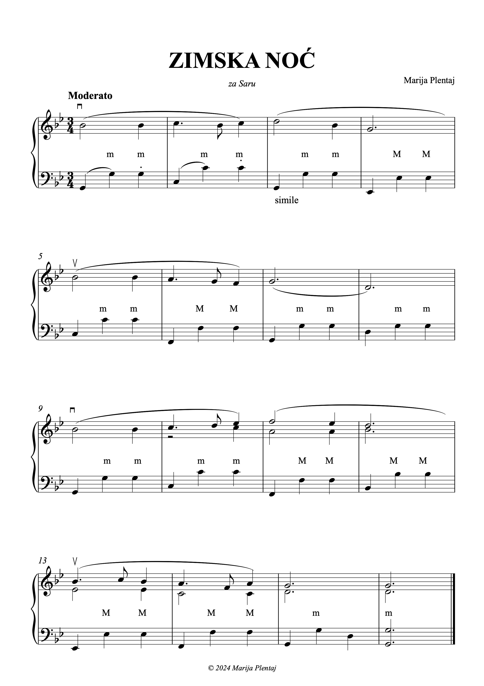
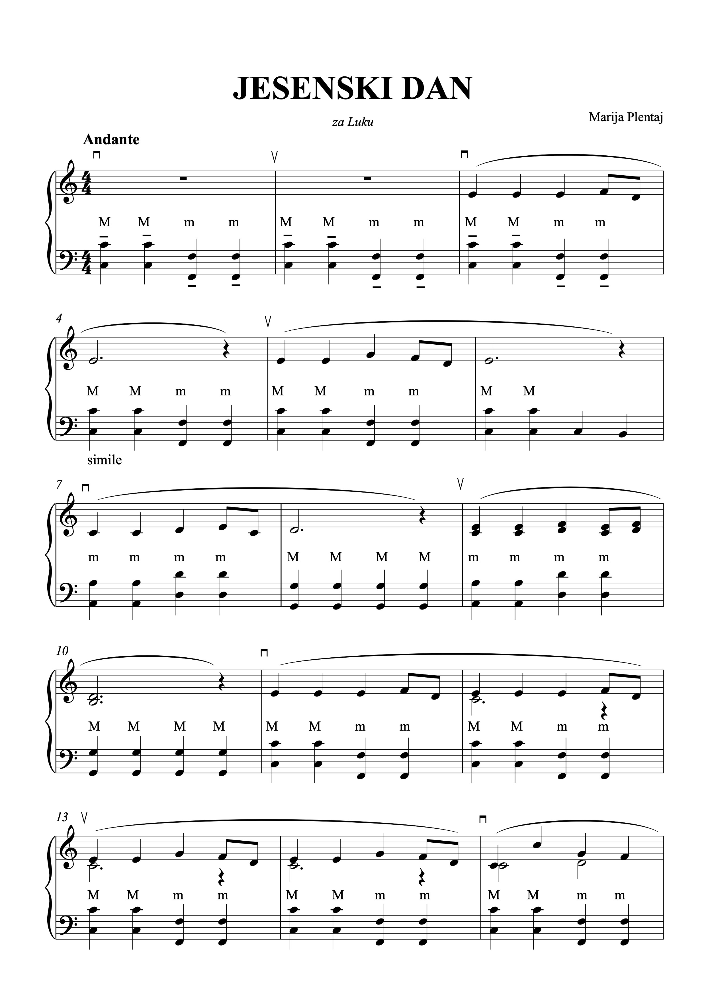
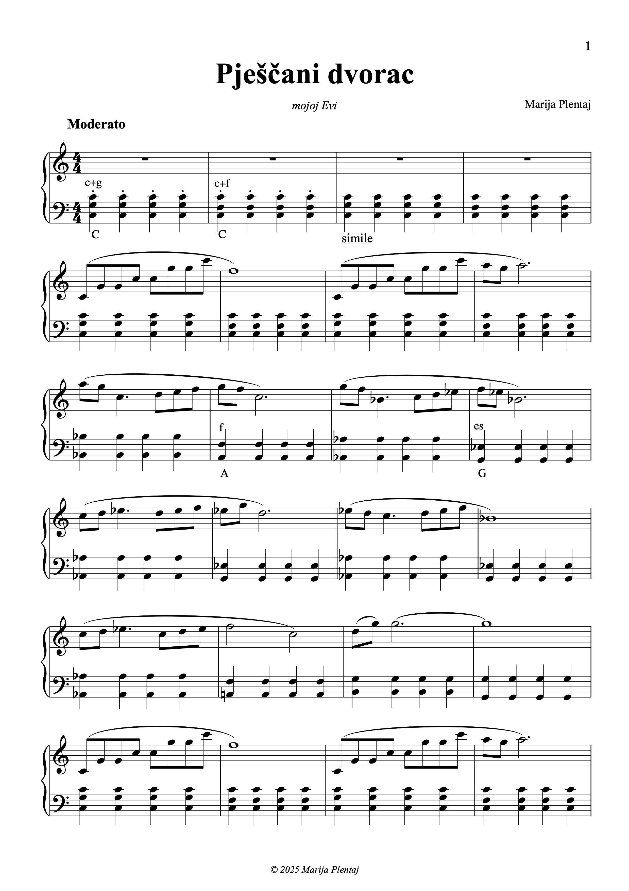
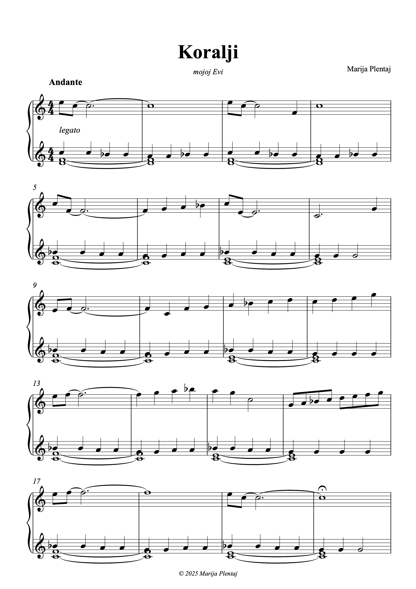

ACCORDION SCORES & ARRANGEMENTS
Marija Plentaj
Accordion teacher, creating original music, arrangements and teaching materials for accordion. Selected sheet music and teaching materials are available here as free downloads.
Browse ScoresSHEET MUSIC
Accordion Scores
Original Compositions

KAPIBARA



Arrangements
VRANAC
Teaching Materials
.jpg)
.jpg)
.jpg)
.jpg)
.jpg)
.jpg)
.jpg)
.jpg)
About

Marija Plentaj
Marija Plentaj is a Croatian accordionist who completed her secondary education at the Vatroslav Lisinski Music School in Bjelovar, studying accordion with Marjan Krajna and music theory with Alida Jakopanec. She then studied accordion at the University of Music and Performing Arts in Graz in the class of Geir Draugsvoll and later completed her studies at the Music Academy in Pula with Denis Modrušan and Franko Božac. After graduating as a Master of Music / Professor of Accordion, she continued postgraduate accordion studies in Graz with Janne Rättyä.
She has worked at several music institutions and has been employed for many years at the Vatroslav Lisinski Music School in Bjelovar, where she works as a Professor Advisor and Head of the Piano Department.
During her education, she participated in numerous seminars and national and international competitions. Among her achievements is winning the overall accordion discipline at the 36th Croatian National Competition of Music and Dance Students in Rijeka. She also performed with several accordion orchestras, including appearances at UNESCO in Paris and at the European Festival of Musical Youth in Barcelona, and received several awards and scholarships for her musical achievements.
Alongside teaching and performing, she has been actively involved in the development and promotion of accordion education in Croatia. She is one of the founders of the Accordion Center Association and has initiated and co-organized numerous projects, competitions, seminars and publications, including the Croatian Accordion Competition in Daruvar, the Seminar Cycle for Croatian Accordion Teachers, the Daruvar Accordion Award, and Eho, Croatia’s specialized digital accordion magazine. She has also been active in graphic and web design, creating websites, publications, logos and visual identities for a variety of projects.
Her students have received more than 100 awards in solo and chamber music competitions. She has also worked as a jury member and seminar lecturer. Her work is focused on motivating young musicians, supporting talented students and promoting the accordion through teaching, arrangements and original music.